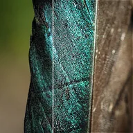

Onscherp masker

Verscherpt door het verschil tussen de laag en een vervaagde kopie ervan weer toe te voegen. Sterkte bepaalt hoe breed de vervaging is, Hoeveelheid hoeveel er wordt toegevoegd, en Drempel boven 50% laat kleine verschillen ongemoeid. Maskerkleur Rood toont het masker in rood waar de helderheid meer dan Drempel boven 50% van de vervaagde kopie afwijkt.
Instellingen
| Instelling | Type | Bereik | Standaard |
|---|---|---|---|
| Sterkte | Getal | 0 tot 2 | 0.02 |
| Hoeveelheid | Getal | 0% tot 200% | 50% |
| Drempel | Getal | -50% tot 100% | 50% |
| Masker tonen | Aan of uit | – | Uit |
| Maskerkleur | Keuze | Grijs, Rood | Grijs |